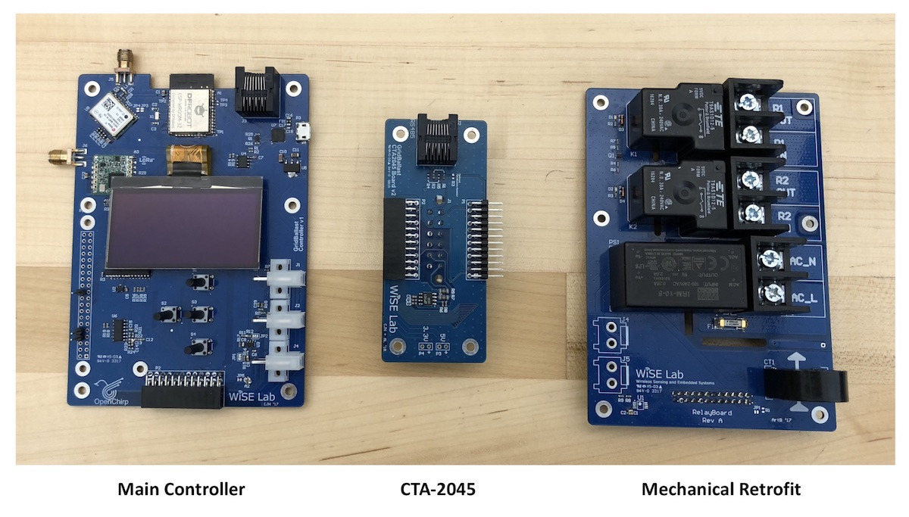
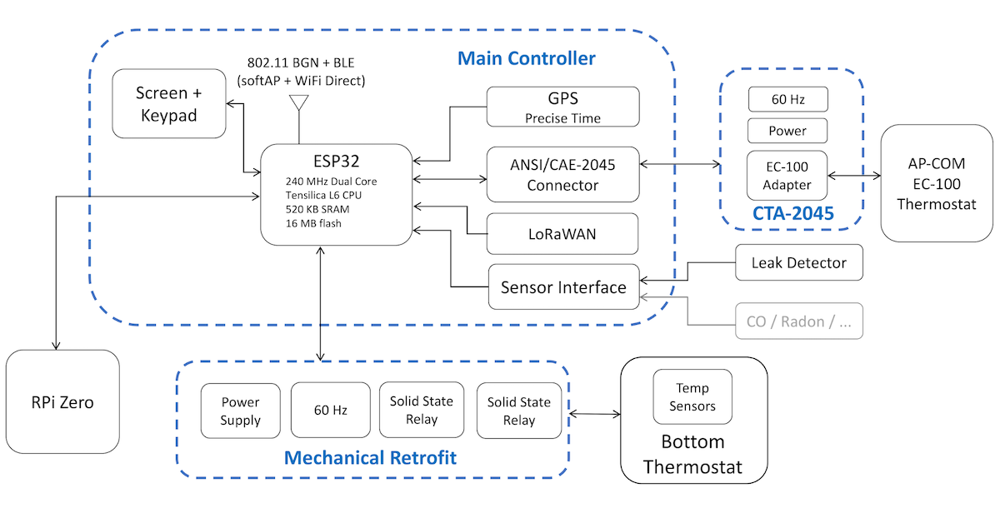
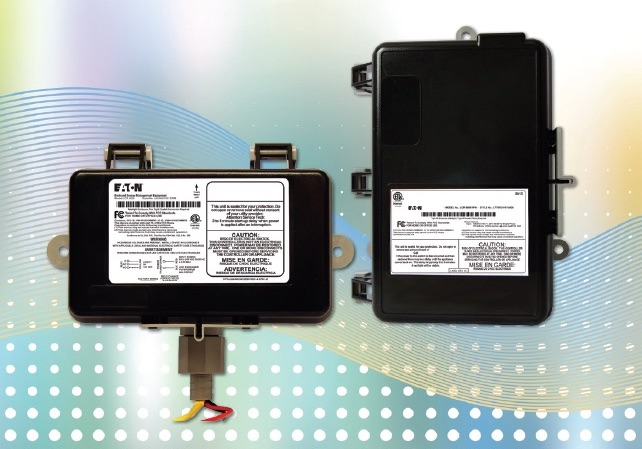
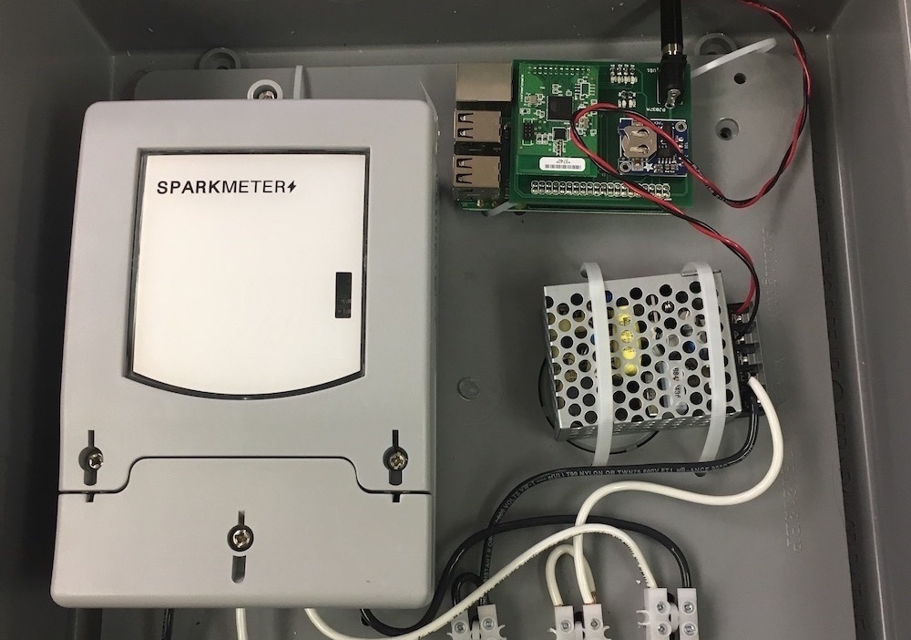
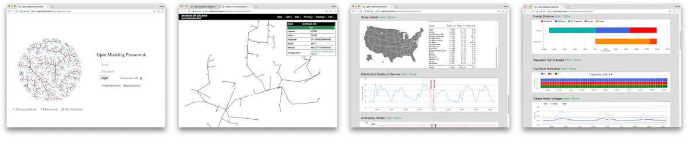

GridBallast is a research project funded by ARPA-E and led by NRECA, the National Rural Electric Cooperative Association. It is developing low cost control devices for water heaters and residential circuits that can operate autonomously to improve the stability and resilience of the North American electric grid. Project partners include Carnegie Mellon University (CMU), Eaton, and SparkMeter.
|  |  |
| OpenGB Hardware | Schematic for OpenGB |
|  |  |
| Eaton WaterHeaterGB Controller | SparkMeter SmartCircuitGB Controller |
|  | |
| Utility Simulation of Frequency and Voltage | |
|
|
| Load and Controller Simulation | Utility Simulation Demo Video |
All project source code, documentation, and analysis are linked above and are available in open source at https://github.com/gridballast.
Development of the core algorithms and simulation results showing their effectiveness was completed in 2017. The hardware was developed in 2018. Field demonstrations at two rural electric cooperatives will be completed in 2019.
For any questions, please email admin@gridballast.com.